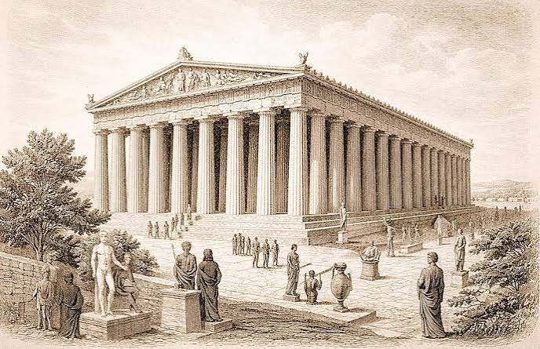

A Grécia Antiga foi o berço da civilização ocidental, marcando a história com inovações na política, filosofia e artes ao longo de séculos. Filósofos, cidadãos e guerreiros moldaram o destino de cidades-estado que influenciaram profundamente os rumos do mundo antigo. Entre grandes templos de mármore e guerras históricas, a sociedade grega legou tradições e valores democráticos que perduram até a atualidade.
Vídeo Principal
Imagem Sobre O Parthenon

Parthenon em Atenas
O Parthenon, símbolo máximo do apogeu arquitetônico e cultural da Grécia Antiga.